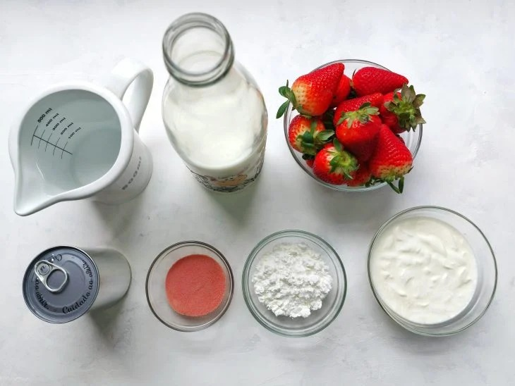

Torta de Morango
Ingredientes
- 2 colheres (sopa) de margarina;
- 2 colheres (sopa) de óleo;
- 1 ovo inteiro;
- 2 colheres rasas (sopa) de açúcar;
- 1 pitada de sal;
- 1 colher rasa (sopa) de fermento em pó;
- Farinha de trigo até a massa desgrudar da mão;
- 1 lata de leite condensado;
- 1 lata de creme de leite;
- 3 gemas;
- 3 copos de leite;
- 1 colher (sopa) de maisena;
- 2 caixinhas de morangos;
- 1 gelatina de morango.

Modo de Preparo
- Em primeiro lugar, faça a gelatina conforme o modo de preparo e deixe-a na geladeira.
- Misture todos os ingredientes e mexa até levantar fervura.
- Quanto você perceber que ele está bem cremoso, mexa bastante sem parar.
- Na hora do uso, ele deve estar já frio ou levemente morno.
- Misture todos os ingredientes e quando ela estiver no ponto, forre um pirex de médio a grande.
- Fure a massa com um garfo e asse em fogo médio entre 10 a 15 minutos.
- Quando dourar, está pronta.
- Disponha a massa assada em um pirex e deixe esfriar um pouco.
- Adicione o creme e, sobre ele, os morangos cortados na transversal.
- Em seguida, adicione a gelatina já em ponto de clara.
- Leve à geladeira por no mínimo 4 horas.